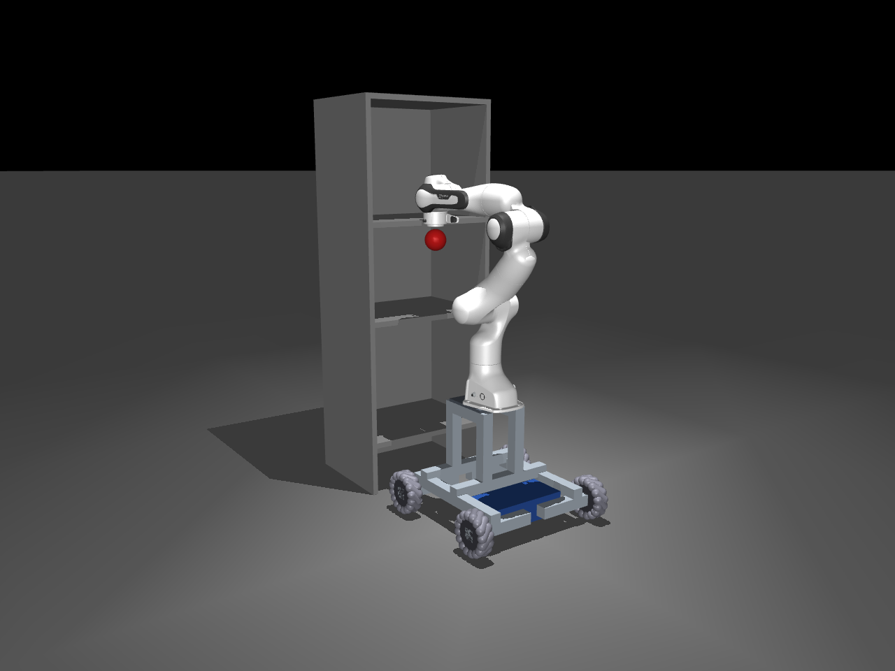
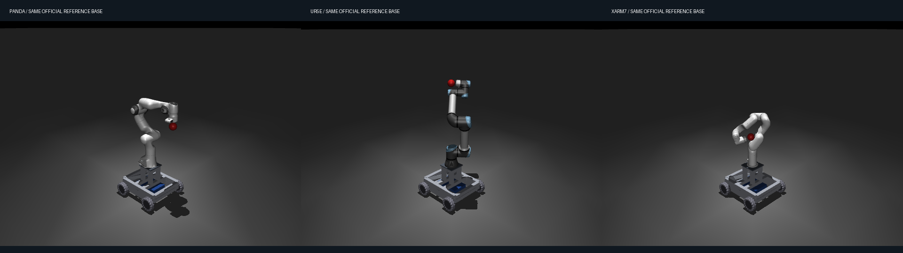

01Luna · 结构硬门槛
轮子在运动学上连接，
几何上却没有车架支撑
三种机械臂组合下，四个轮组到最近结构件的表面间隙约 90.35 mm，超过 50 mm；轮轴中心间隙为 190 mm，超过 5 mm。
允许的轮轴中心间隙5 mm
Luna 的轮轴中心间隙190 mm
评分影响 S1.structure = 0，原始 37.96 分被封顶为 15 分。
从零设计通用移动操作底盘，并开发带载货架控制策略。

给定标准组件和公开货架场景，Agent 自主设计同一套底盘，分别承载 Panda、UR5e、xArm7。控制器需要从公开初态出发，移动底盘并调整机械臂，抵达货架内目标位置并持续保持。
标准麦克纳姆轮、电池、铝型材、机械臂与通用安装板；公开场景和 12 个目标。
scene.xmlshelf_spec.jsonassets/从零构建底盘 MJCF，并提交可在独立进程中运行的自包含控制器。
robot.xmlcontroller.py替换为三种可信机械臂；测试结构、稳定、效率和两档负载下的货架控制。
1 kg / 2 kg3 × 12 × 2
参考底盘的三臂组合，用于说明任务对象；不代表受测模型的最终提交。
正在载入原版题面…
五个阶段构成总分。每个检查点取三种机械臂的最低值；模型加载或结构连接不合格时，总分最多为 15。下面展示的是两次实际提交的分数与分项，不是重复运行的统计分布。
| 模型 | 有效性 /15 | 设计效率 /35 | 静态稳定 /15 | 动态稳定 /20 | 货架控制 /15 | 最终 /100 |
|---|
结构连接检查 S1.structure 为 0，触发原版有效性门槛。五阶段贡献仍如实展示，最终总分受封顶规则约束。
| 检查点 | 含义 | 权重 | Luna /1 | Sol /1 |
|---|
目标按原版顺序编号 01—12。两档负载各 36 项，另有三臂首目标确定性重放；两模型的确定性检查均通过。
轨迹来自本次有效 trial 的记录，展示 Agent 的消息、命令与工具返回。时间相对开发开始计时；过程中的自测输出不作为正式成绩。
三种机械臂组合下，四个轮组到最近结构件的表面间隙约 90.35 mm，超过 50 mm；轮轴中心间隙为 190 mm，超过 5 mm。
评分影响 S1.structure = 0，原始 37.96 分被封顶为 15 分。
官方 72 个目标中，仅通过 14 个；其余 58 个均因 pressed into the shelf 失败。Panda 两档负载均为 0/12。
“I did not run the full three-arm, 12-target evaluation.”— Luna 的最终提交说明
评分影响 三臂逐检查点取最低值，货架控制贡献最终为 0/15。
依据：官方目标记录与 Agent 最终消息UR5e 有 2 个目标因压入货架失败；xArm7 有 8 个记录为 controller response timeout，均发生在仿真时间 0 秒。
代码在 reset() 中执行几何处理与规划，计算开销可能相关；这是代码层面的推断，超时位置不能仅凭报告精确定位到函数。
评分影响 xArm7 两档负载均为 8/12，货架控制贡献降至 10/15。
两模型最终静态稳定项均为 0/15。Sol 在 Panda、UR5e 上的静态裕度检查点为 0；xArm7 为 1，但最低值聚合仍得到 0。
Sol 的动态场景 C 为 0，设计效率检查点为 0.3456；它在质量、型材与占地等约束内完成设计，但尚未获得高性能的综合折中。
分数含义 结构可用、目标能到达，与系统稳定、资源高效是不同的检查维度。
依据：原版检查点与逐机械臂报告A：静态伸展与回转；B：强加速与制动；C：前伸状态下侧向反转与弧线转弯；D1：上坡与横坡移动；D2：路沿与颠簸；E：坡面加速与带载摆臂。以下只统计是否倾覆，不能等同于跟踪性能、稳定裕度或场景满分。
| 模型 / 机械臂 | A 静态 | B 加减速 | C 侧向与转弯 | D1 斜坡 | D2 不平路面 | E 组合 |
|---|
每模型仅有一个有效工程 trial，不估计方差，也不作统计显著性结论。两次工具/网络基础设施尝试已单独排除；正式提交从干净环境开始，题目、物理、控制器时限与评分阈值保持原样。模型产物未被人工修复。
RLE-Bench 官方 Task08
查看固定版本源码 ↗
Harbor 0.21.0 · Codex CLI 0.118.0
high reasoning · Linux Docker · MuJoCo 3.5.0
307 个原始源文件保持不变
c6bf572…433d · 许可证与第三方声明 ↗
页面打包题面、模型原样产物、结构化工具轨迹与评分证据。下载的 XML 和控制器需配套固定版本 case 的公开 assets 与运行环境；完整机器人网格请使用本地 case 或固定版本源码。完整原生执行归档保留在本地 case 的 validation_models 目录。场景图为正式验收生成的静态渲染；参考动作演示来自此前 Windows 参考控制器诊断，不属于模型正式运行视频。